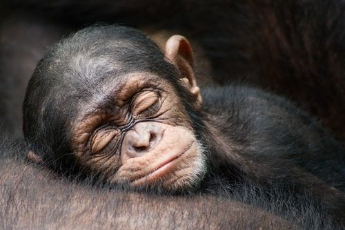
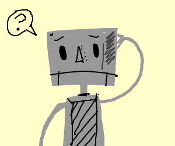

Monkey Sleep Stage Classification with Neural Recordings

I am working with 3 other students to predict sleep stages from a monkey's neural activity. We are using data collected from a macaque implanted in the monkey's brain to predict whether or not they are moving or note moving; what we see as an incremental step in next obtaining sleep stages. In this work, my job is to clean and prepare the data for modeling.
Probabilistic Graphical Models and COVID-19
Motivated by the work "Planning as Inference for Epidemiological models", my project partner and I produced a mini-example of what the paper demonstrates for a broader audience to access examples and can run out-of-the-box notebooks. At a high-level these researchers did some cool modeling work for COVID but implement it in a language that’s not too easy to use and they have a complicated epidemiologicamodel so we want to both offer a middle ground that is to use simpler compartmental models with than theirs first, and build up to theirs. To do so, this brings us to our choice of implementation in a deep universal probabilistic programming language called Pyro.
That work can be found here (once published).

In today's landscape of of how artificial intelligence is applied to natural language, the amount of success one has is closely related to the number of parameters your model consists of. In this work, my partner and I use generative adversarial imitation learning on a dialog dataset which we pose as a reinforcement learning environment, recover a policy + reward function for the task which we then use to compare to what freely available large language models provide as response's to some typical conversations of the dataset. Our hope is to demonstrate the applications of reinforcement learning as a tool for evaluating the limits of large models for dialog.
That work can be found here (once published).
Deep Reinforcement Learning (CS 285)
Over the Summer I followed the lectures for CS 285, Deep Reinforcment Learning. At the same time as this, I learned how to put some of these algorithms to code (with a lot of help from existing material), and got to see some cool videos of the agents I programmed evolve. That code can be found here.
Roadmap Segmentation and Object Detection
In this work we construct a top down view of
a road-map and objects surrounding an ego car
using six images taken from a camera mounted
on top of a car. We use self-supervised learning
to build a representation using a large unlabeled
dataset and fine-tune on two downstream tasks,
roadmap prediction and bounding box detection.
Our approach achieves a roadmap threat score
of 0.76, and identifies objects with a bounding
box intersection over union (IoU) threat score of
0.007
For a demonstration of how this model worked and more details about the project, please check out this video made by our team:
youtube
In Septmber 2019, I, along with my teammate Sarang Yeola, competed in the 2019 NBA Hackathon. In this time, we analyzed data from the National Basketball Association to find ways to characterize a player's market value to an NBA franchise.